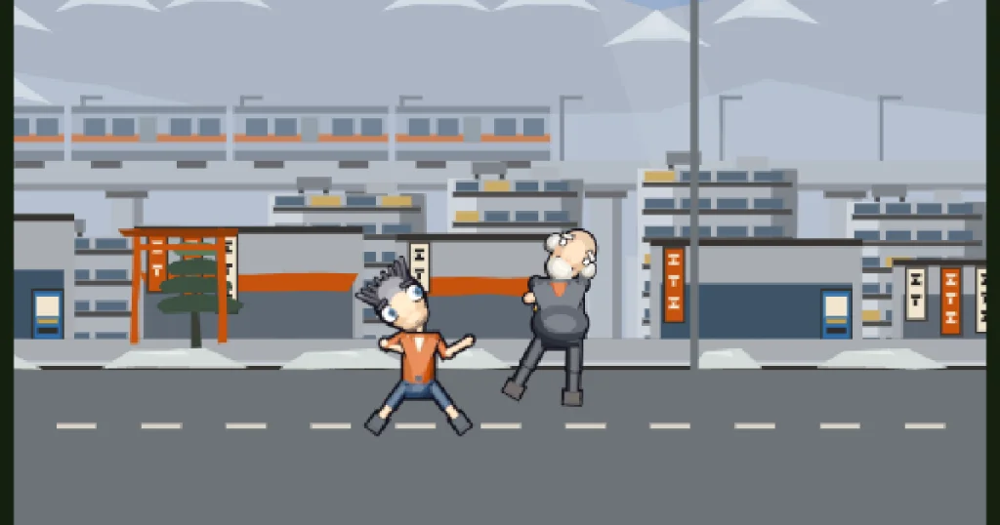

What happened
Someone made a fight animation in Pivot Animator. The project file is gone — all that survived was a screen recording of it playing.
So it was rebuilt from the pixels. Every frame of the recording was registered against the first one, the moving figures were separated from the backdrop, and what came out the other side was the thing underneath the video: 84 frames of timing, a camera track that pushes in to just over 2×, and where each fighter stood on every one of them.
None of the original art could be kept — it was not ours to use. What was worth keeping was the performance.
What it looks like

Why it looks like this
The stage is generated the way Aracstory generates a dungeon — from a seed. Change the seed and you get a different street with the same fight in it, and there are three worlds it can be drawn in: feudal Japan, a neon future and a wasteland. What carried across from that project is the idea, not the look: four layers of trees scroll at different speeds under the recovered camera, which is what turns an eight-second pan into somewhere with depth.
The register is 1990s cel animation, and the colour is measured rather than guessed. We pulled colour statistics from ten CC-licensed photographs of real Dragon Ball and AKIRA production cels: 90s cel paint sits at roughly double the saturation of the soft modern look, and it inks in near-black rather than warm brown. Both are applied here.
The fighters are drawn to our own written anime recipe — the same one the studio's Blender pipeline reads. Large soft irises at two-thirds of the eye height, one big specular highlight top-left and a small one lower-right, a thick upper lash line and no lower one, a head deliberately oversized, and a line that is warm dark brown rather than black. The pupils track whoever they are fighting, and they are dressed — collar, sleeves, belt — rather than left as mannequins.
The eye proportions are measured rather than guessed. We ran an anime-face detector across nine renditions of one character by nine different artists: an eye is about a third of the face wide, slightly taller than it is wide, and the gap between the eyes is narrower than one eye — the opposite of what our own style guide used to say.
Nothing about the art is picked by eye: every colour on a fighter is a blend of two values from the studio's anime palette, and a test fails the build if that stops being true.
Nothing here is hand-posed. Every position, every hold and every camera move is the measurement taken off the original recording.
Things to try
- Slow it to 0.1× and watch the hold before the throw — it is the longest frame in the piece, and it is the reason that beat lands.
- Step through frame 53. That is the one the heavy hit connects on.
- Hit the reseed button a few times. The fight never changes.